Course Outline
Weightage

Book
Resources
Lecture Notes
1.
📄 What is an OS?1
2.
📄 Timeline of the Computer Systems2
4.
📄 Operating System Structures10
5.
📄 Architecture of the OS12
6.
📄 DMA | Synchronous IO Operations13
7.
📄 Daisy Chaining16
8.
📄 CPU Schedulers17
9.
📑 Process23
10.
📄 DeadLocks34
- What is an OS?What is OS?An intermediary layer between user and computer hardware Provides abstraction for user to communicate with hardware Serves as a Resource AllocatorResources can be shareable and non-shareable IO Devices, timers, disks, memories, network interfaces, printers etc.top-down view is that it is a program that acts as an intermediary between a user of a computer and the computer hardware, and makes the computer system convenient to usethe bottom-up view is that operating system is a resource manager who manages the hardware and software resources in the computer systemPurposeSolve User ProblemsEfficiency for UserConnivence for UserTerms / ComponentsKernelThose files / software which are stored in the RAM from ROM to load the operating system into the memorythere are four events that cause execution of a piece of code in the kernel. These events are: interrupt, trap, system call, and signal.Entry points into the operating system kernel
 Bootstrap LoadingThe process of loading the OS into the RAMResource Multiplexing1.In Time2.In SpaceProcessA process may require the combination of CPU utilisation and IO utilisation CPU manges computation and IO devices Therefore, a process needs to tend to CPU for computation as well as IO devices A process may consist of many threadsFrequencyA frequency of 2.3 GHz can about perform 2.3 Giga OscillationsSee Also : Timeline of the Computer Systems2
Bootstrap LoadingThe process of loading the OS into the RAMResource Multiplexing1.In Time2.In SpaceProcessA process may require the combination of CPU utilisation and IO utilisation CPU manges computation and IO devices Therefore, a process needs to tend to CPU for computation as well as IO devices A process may consist of many threadsFrequencyA frequency of 2.3 GHz can about perform 2.3 Giga OscillationsSee Also : Timeline of the Computer Systems2 - Timeline of the Computer Systemshistory of classified os developed over the yearsUniprogrammed SystemsOne process at a timeProcess is called a JobThe reason is that there is no interactivity, the user cannot interact at the time of the executionMemory partitioned into user and system spaces
 The Monitor - Simple Batch SystemInvolves Punchcards / Magnetic TapesManages the sequential execution in terms of a batchProcessBring cards to 1401Read cards to tapePut tape to 7094 which does computingPut tape on 1401 which prints outputConsWaste of CPU ResourcesIf only an I/O Job is required, the CPU sits IdleNo Customisation in terms of software needsIf the program changes, the logic changes, the punch card needs to be changedMultiprogrammed SystemsOne Job can use the CPU for computation while the other waits for I/O OperationMultiple programs simultaneously but not at the same timeSeveral jobs are kept in the main memory and the CPU is multiplexed upon themContext Switching3Performance CriteriaTurn Around TimeThe Time taken to start and provide output for the jobThe Less the BetterMultitasking SystemsTime Sharing SystemA Time Sharing SystemThe CPU resource is shared between processes based on a specific time. Involves Process PreemptionResource Sharing AlgorithmsDifference between Multitasking and MultiprogrammingThe objective of multiprogramming is to have some process running all the time so as to maximize CPU utilization(When one program work on an I/O the other should come and continue its execution so that the CPU doens't sit Idle). The objective of time-sharing is to switch the CPU among processors so frequently that users can interact with each program while it is running.Multiprocessing OSMultiCore SystemsMultiCore SystemsMore than one CPU in close communicationIncreased throughputEconomicalFault TolerantSymmetric Multiprocessing (SMP)In an SMP system, all processors or cores are considered equal and have equal access to the system resources. The operating system treats all processors as peers and can assign tasks to any available processor. SMP systems typically share a common memory space, allowing processes or threads to communicate and share data easily. This symmetric design simplifies programming because the same code can often run on any processor without the need for specific optimisations or considerations.Asymmetric Multiprocessing (AMP)In an AMP system, different processors or cores may have distinct roles or responsibilities. Each processor is typically dedicated to specific tasks or functions. For example, one processor might handle user interface tasks, while another handles data processing. In an AMP system, the processors may or may not share a common memory space, depending on the specific design. Programming for AMP systems can be more complex because developers must explicitly manage task allocation and synchronisation between the different processors.Parallel Systems6Tightly coupledDistributed System7Processors are over the network, the network os decides which query will be handled by which processorClustered OSDistribution of Computer Systems but they share a same physical storage
The Monitor - Simple Batch SystemInvolves Punchcards / Magnetic TapesManages the sequential execution in terms of a batchProcessBring cards to 1401Read cards to tapePut tape to 7094 which does computingPut tape on 1401 which prints outputConsWaste of CPU ResourcesIf only an I/O Job is required, the CPU sits IdleNo Customisation in terms of software needsIf the program changes, the logic changes, the punch card needs to be changedMultiprogrammed SystemsOne Job can use the CPU for computation while the other waits for I/O OperationMultiple programs simultaneously but not at the same timeSeveral jobs are kept in the main memory and the CPU is multiplexed upon themContext Switching3Performance CriteriaTurn Around TimeThe Time taken to start and provide output for the jobThe Less the BetterMultitasking SystemsTime Sharing SystemA Time Sharing SystemThe CPU resource is shared between processes based on a specific time. Involves Process PreemptionResource Sharing AlgorithmsDifference between Multitasking and MultiprogrammingThe objective of multiprogramming is to have some process running all the time so as to maximize CPU utilization(When one program work on an I/O the other should come and continue its execution so that the CPU doens't sit Idle). The objective of time-sharing is to switch the CPU among processors so frequently that users can interact with each program while it is running.Multiprocessing OSMultiCore SystemsMultiCore SystemsMore than one CPU in close communicationIncreased throughputEconomicalFault TolerantSymmetric Multiprocessing (SMP)In an SMP system, all processors or cores are considered equal and have equal access to the system resources. The operating system treats all processors as peers and can assign tasks to any available processor. SMP systems typically share a common memory space, allowing processes or threads to communicate and share data easily. This symmetric design simplifies programming because the same code can often run on any processor without the need for specific optimisations or considerations.Asymmetric Multiprocessing (AMP)In an AMP system, different processors or cores may have distinct roles or responsibilities. Each processor is typically dedicated to specific tasks or functions. For example, one processor might handle user interface tasks, while another handles data processing. In an AMP system, the processors may or may not share a common memory space, depending on the specific design. Programming for AMP systems can be more complex because developers must explicitly manage task allocation and synchronisation between the different processors.Parallel Systems6Tightly coupledDistributed System7Processors are over the network, the network os decides which query will be handled by which processorClustered OSDistribution of Computer Systems but they share a same physical storage - Context SwitchingSwitching from User Mode to Kernel Mode or Vice VersaMode BitDecides what mode will the operating system will be utilising
Bit Context 0 Kernel Mode 1 User Mode Basically an operating system operates in two modes In order for the CPU to be able to differentiate between a user process and an operating system code, we need two separate modes of operation: user mode and monitor mode (also called supervisor mode, system mode, or privileged mode). A bit, called the mode bit, is added to the hardware of the computer to indicate the current mode: monitor mode (0) or user mode (1).User ModeUser processes are executed hereKernel ModeAuthorised access is needed here All system calls are to be executed in Kernel modeThe dual-mode operation of the CPU 
- SJF - Shortest Job First
Processes Arrival Time Burst Time Turn Around Time Waiting Time P1 0 7 7 0 P2 2 4 10 6 P3 4 1 4 3 P4 5 4 11 7 - RR - Round RobinProvide equal Time Quantum to all processesA queue is maintained where processes waiting are put one after anotherThe next processes is picked from the top of the queueTime QuantumThe CPU time which is to be assigned to each processesExample Time Quantum = 2
Process Arrival Time Burst Time Turn Around Time Waiting Time P1 0 5 2 7 P2 1 4 10 6 P3 2 2 4 2 P4 3 1 6 5 Example Time Quantum = 10Process Arrival Time Burst Time Turn Around Time Waiting Time P1 0 20 20 0 P2 25 25 45 20 P3 30 25 55 30 P4 60 15 30 15 P5 100 10 10 0 P6 105 10 15 5 - Shared EverythingMemory and Disk is shared by multiple computer devices Increased Cache Hit RatioMySQL and SQL Server use Shared Everything Architecture
- Shared NothingResources are not shared between multiple computer devicesIdeal for same task / Parallel ProcessingEvery worker will do the same thingDB2 and TeraData use Shared Nothing Architecture
- Architecture of the Computer SystemMicro ProcessorsThe brain / controller of every device within the computer. Every device can have its own controller and that controller can be its micro processor.Each I/O device have its controllerThe controller has a local bufferThis buffer stores the data and then the communication between CPU and device startsThe device controller on completing its task, informs the CPU through an interrupt that it's operation has finishedRegistersInternal RegistersMARMBRI/O Address RegisterI/O Buffer RegisterUser-Visible RegistersUser has access to these registersAvailable to all application programsControl and Status RegistersIR - Stores the Current InstructionPC - Stores the Current Instruction AddressPSW - Interrupts / Condition CodesMemory StructureCloser to the CPU:RegisterCacheUsed to store subset of the most used instructionsRAMSecondary DiskThe top four levels of memory in the figure are constructed using semi-conductor memory, which consists of semiconductor-based electronic circuits. NVM devices, at the fourth level, have several variants but in general are faster than hard disks. The most common form of NVM device is flash memory, which is popular in mobile devices such as smartphones and tablets.Loading a ProgramDisk -> Memory -> Cache -> Register Loading to Memory is a must but depending on the frequency of the usage, the program may be loaded to Cache or to RegisterI/O StructureDevice ControllerResponsible for communication between device and the operating system / cpuThe electronic component that is in-charge of a specific deviceAccepts commands from the operating systemInitiated by a device driver on the software levelA Typical Instruction to the controller would be like:cRead Sector 11,206Responsible ForDetermine the current position of the headMove head to the required locationAccept data bit by bitStore in a local bufferPerform checksum on the dataDevice Status TableDetermines the status of the processes being executed by the device. Stores:Device TypeAddressStateA device queue is maintained to store the processes requiring access to the input device until it is busy This Queue stores the device address, file and operation to get to the operation as soon as the device is freeInterruptsAn interrupt is a signal generated by a hardware device (usually an I/O device) to get CPU’s attentionInterrupt transfers control to the interrupt service routine (ISR), generally through the interrupt vector table, which contains the addresses of all the service routines. The interrupt service routine executes; on completion the CPU resumes the interrupted computation.Hardware InterruptsGenerated by hardware devices to signal attentionAn ISR is executed for each interrupt and this ISR is mapped into the interrupt vector table.Software InterruptsGenerated by programs to impose that they want to request a system callTrapsSome error or condition occurred for which assistance of operating systems is requiredInterchangeable called as exceptions
- Machine CycleA machine cycle consists of the steps that a computer's processor executes whenever it receives a machine language instruction. It is the most basic CPU operation, and modern CPUs are able to perform millions of machine cycles per second. The cycle consists of three standard steps: fetch, decode and execute.
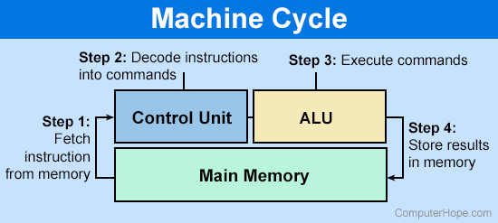
The Machine Cycle - Operating System StructuresMonolithicA Linux Monolithic Architecture
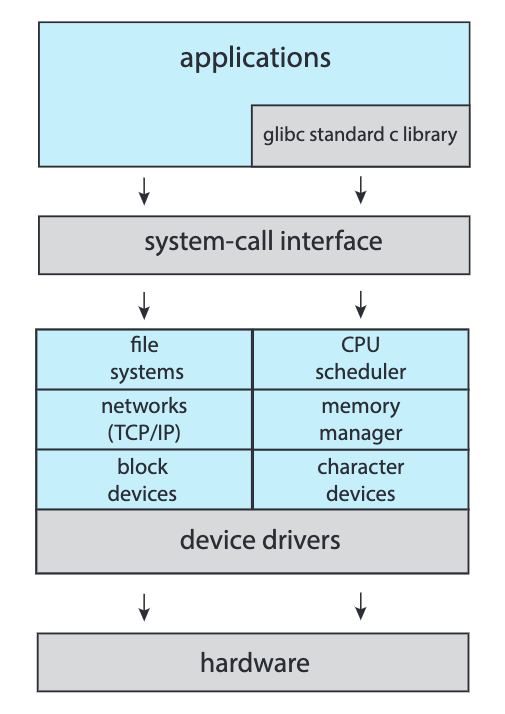
The simplest structure for organising an operating system is no structure at all. That is, place all of the functionality of the kernel into a single, static binary file that runs in a single address space. This approach—known as a monolithic structure—is a common technique for designing operating systems.In a monolithic operating system structure, the entire operating system is implemented as a single large program or kernel. It consists of various modules and functions tightly integrated together without clear separation. The operating system provides all services, including process management, memory management, file systems, device drivers, and more, within a single unified structure. The need for this structure is often driven by simplicity and performance, as direct function calls and shared memory access can be efficient. However, it lacks modularity and can be challenging to maintain and extend.Monolithic kernels do have a distinct performance advantage, however: there is very little overhead in the system-call interface, and communication within the kernel is fast.Entire O.S. is placed in kernel spaceAll O.S. code runs in privileged modeHigher performance but higher risk for system crashLayeredA Layered Architecture 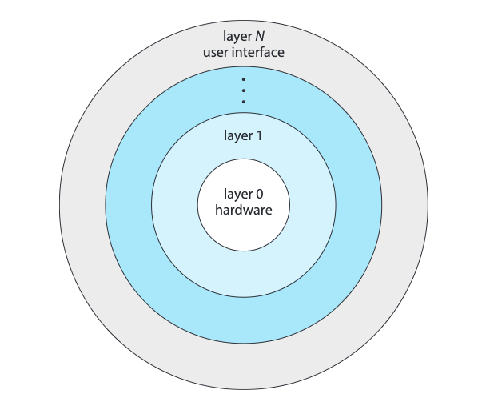
In a layered operating system structure, the operating system is divided into layers, where each layer provides a set of related services. Each layer builds upon the layer below it, and higher layers depend on lower layers for functionality. This structure allows for modular design, separation of concerns, and ease of maintenance. Each layer provides a well-defined interface for the layer above, hiding the implementation details. For example, one layer may handle process management, another layer may handle file systems, and so on. The need for a layered structure arises from the desire for modularity, abstraction, and easier debugging and development of operating systems.The monolithic approach is often known as a tightly coupled system because changes to one part of the system can have wide-ranging effects on other parts. Alternatively, we could design a loosely coupled system. Such a system is divided into separate, smaller components that have specific and limited functionality. All these components together comprise the kernel.MicrokernelA microkernel structure aims to minimise the kernel's size and complexity by moving most of the operating system services out of the kernel and into user-space processes. The microkernel provides only essential services such as process scheduling, inter-process communication11, and basic memory management. Other services, such as device drivers and file systems, are implemented as separate user-space processes called servers. The microkernel provides a communication mechanism for these servers to interact with each other and with user processes. The main advantage of a microkernel structure is increased flexibility, as it allows for easier customisation, addition, and removal of services without modifying the kernel. However, the performance overhead of inter-process communication can be a drawback.Perhaps the best-known illustration of a microkernel operating system is Darwin, the kernel component of the macOS and iOS operating systems. Darwin, in fact, consists of two kernels, one of which is the Mach microkernel.Virtual MachinesA virtual machine (VM) structure involves running multiple instances of operating systems, called virtual machines, on a single physical machine. Each virtual machine acts as an independent and isolated environment, running its own operating system instance and applications. The virtualisation layer, often called the hypervisor, manages and allocates the physical resources to the virtual machines. The need for virtual machines arises from the desire to consolidate hardware resources, improve resource utilisation, and isolate different environments. Virtual machines enable running multiple operating systems and applications on the same hardware, allowing for efficient server consolidation, software testing, and sandboxed execution of potentially insecure or incompatible software. - IPC Methods2023-10-29 18:05:04In modern computer systems, multiple processes often need to communicate with each other. This communication between processes is referred to as interprocess communication (IPC). There are different mechanisms for IPC, including shared memory and message passing. This article will discuss the differences between these two mechanisms and their pros and cons.Shared Memory:In shared memory, a region of memory is shared by two or more processes. The processes can read and write data to this shared memory region, and the changes made by one process are immediately visible to the other processes. Shared memory is one of the fastest IPC mechanisms because data transfer between processes is done directly in memory without any need for data copying or buffer allocation.Pros of Shared Memory:1.Speed: Shared memory is one of the fastest IPC mechanisms. Since data is shared directly in memory, there is no need for data copying or buffer allocation, making it faster than other mechanisms.2.Efficiency: Shared memory is an efficient mechanism because it reduces overhead. Processes can read and write to the shared memory region directly without the need for an intermediary.3.Data Sharing: Shared memory is ideal for situations where processes need to share large amounts of data. Since data is stored in a shared memory region, all processes can access it without the need for copying.Cons of Shared Memory:1.Synchronisation: Shared memory requires careful synchronisation between processes to avoid data inconsistency. A process must ensure that it is reading the latest data and that no other process is modifying the same data.2.Security: Shared memory is not secure because it can be accessed by any process that has permission to access it. If one process has malicious intent, it can alter the data, which can cause problems for other processes that rely on that data.3.Management: Managing shared memory can be challenging, especially when multiple processes are involved. The system must ensure that the shared memory region is allocated and deallocated correctly to prevent memory leaks and other problems.Message Passing:In message passing, processes communicate with each other by sending messages. The messages can be sent either synchronously or asynchronously. In synchronous communication, the sending process waits for a response from the receiving process before proceeding, while in asynchronous communication, the sending process does not wait for a response.Pros of Message Passing:1.Security: Message passing is more secure than shared memory because messages are sent directly between processes, and only the intended recipient can access the message.2.Flexibility: Message passing is more flexible than shared memory because it allows processes to communicate even if they are not running on the same machine or operating system.3.Error handling: In message passing, it is easier to handle errors because each message is processed independently. If an error occurs, it is isolated to that specific message, and it does not affect other messages or the entire system.Cons of Message Passing:1.Overhead: Message passing has more overhead than shared memory because messages must be copied and queued for transmission.2.Latency: In message passing, there is more latency than shared memory because messages must be queued and processed by the operating system.3.Complexity: Message passing can be more complex than shared memory because it requires explicit coding to send and receive messages, and there is a need to handle message queues and buffering.Shared memory and message passing are two popular mechanisms for interprocess communication. Both mechanisms have their advantages and disadvantages, and the choice of mechanism depends on the specific requirements of the application. Shared memory is faster and more efficient for sharing large amounts of data, while message passing is more secure and flexible. Ultimately, the choice of mechanism depends on the application's specific needs, and careful consideration should be given to the advantages and disadvantages of each mechanism before making a decision.In addition to shared memory and message passing, there are other methods for interprocess communication. These include:1.Pipes1.Pipes are a unidirectional form of IPC. They enable communication between two processes, where one process writes data to the pipe, and the other reads from it.2.Sockets1.Sockets provide a mechanism for interprocess communication between processes running on different computers, or even different operating systems. Sockets use a client-server architecture, where one process acts as a server and listens for incoming connections, while the other process acts as a client and establishes a connection to the server.3.Remote Procedure Call (RPC)1.RPC is a mechanism for interprocess communication that allows a process to call a function in another process, as if the function were a local function. RPC provides a higher-level abstraction than shared memory or message passing, as it enables processes to communicate using a procedure call interface.4.Signals1.Signals are a mechanism for interprocess communication in Unix-based systems. A signal is an interrupt delivered to a process, which can be used to notify the process of an event or to request a specific action.5.Semaphores371.Semaphores are a synchronisation mechanism that enables multiple processes to access a shared resource. A semaphore is used to coordinate access to a shared resource, such as a shared memory region, by controlling access to the resource through a counter.
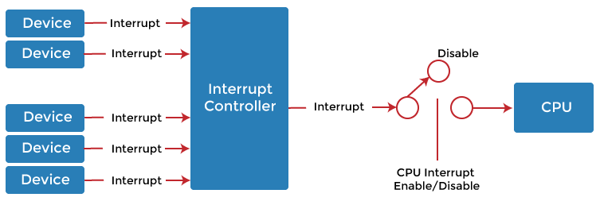
At the CPU level, interprocess communication is typically implemented using hardware interrupts. An interrupt is a signal generated by hardware or software to interrupt the normal execution of a process and transfer control to an interrupt handler routine, which can be used to respond to the interrupt and perform some action.In modern computer systems, interrupts are used extensively to handle a wide variety of events, such as I/O operations, timer interrupts, and system calls. For example, when a process needs to perform an I/O operation, it sends a request to the operating system, which then issues an I/O command to the device driver. The device driver then waits for the I/O operation to complete and sends an interrupt to the operating system when it is finished. The operating system then sends a signal to the waiting process, indicating that the I/O operation has completed and the process can continue.Interrupts are a critical component of interprocess communication at the CPU level, as they enable efficient and timely handling of events and provide a way for processes to communicate with each other and with the operating system. Interrupts are implemented in hardware, which makes them very fast and efficient, and they are an essential part of the way modern computer systems handle interprocess communication.Each of these IPC methods has its own set of advantages and disadvantages, and the choice of method depends on the application's specific requirements. It is important to evaluate the available options carefully and choose the most appropriate method for the particular scenario. - Architecture of the OSSystem CallsAll backend operations are to be executed or triggered through the system call. It's basically an API that helps us communicate with the the backend operations Different operating systems have their own System Call API structuresMethods to Pass Parameters to System CallsPass through a registerDrawback: Limited number of register, how to pass more parameters?Store in a block of memoryThis approach is used by linux and solarisPush the parameters into the stackContext SwitchingSwitching from User Mode to Kernel Mode or Vice VersaMode BitDecides what mode will the operating system will be utilising
Bit Context 0 Kernel Mode 1 User Mode Basically an operating system operates in two modes In order for the CPU to be able to differentiate between a user process and an operating system code, we need two separate modes of operation: user mode and monitor mode (also called supervisor mode, system mode, or privileged mode). A bit, called the mode bit, is added to the hardware of the computer to indicate the current mode: monitor mode (0) or user mode (1).User ModeUser processes are executed hereKernel ModeAuthorised access is needed here All system calls are to be executed in Kernel modeThe dual-mode operation of the CPU - DMA | Synchronous IO OperationsSynchronous IO OperationSome flow of execution, such as a process or a thread is waiting for the operation to complete and once it does complete, then the same process maybe performs some action on it or simply utilises it's result.Blocking of input device until the operation is not performed completelyThe processes requiring that specific I/O device need to wait in the Device Queue14There is no acknowledgment or signal to inform the CPU about the I/O operationsThe OS makes the CPU wait till the I/O complete interrupt is generatedSynchronous I/O FlowCPU Issues read command to I/O moduleI/O module inform the CPU about the read status of the I/O deviceIf the device is not ready then a Device Queue14 entry is madeI/O module reads word from I/O device to the CPUCPU writes this word into the memoryIf another instructions is to be read then the same cycle repeats.
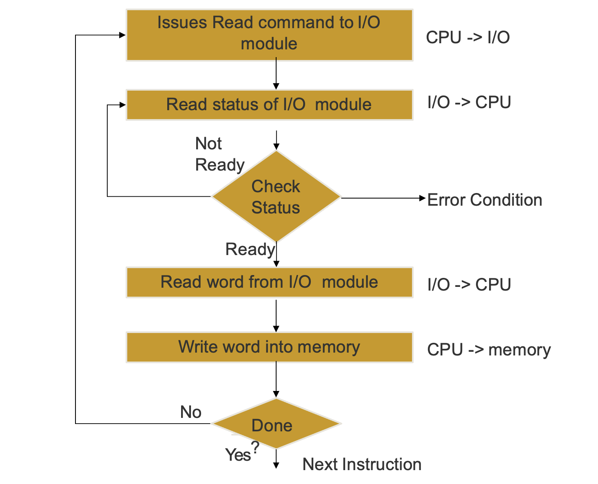
Polling / ConCPU needs to keep track of the status of the I/O device until the operation is being performedAsynchronous IO OperationNothing waits for the result to be completed and the completion of the operation itself performs a callbackThe input device is not blocked and can be used simultaneously between different programs and processesAn acknowledgment bus is used to inform CPU about the operations performed through I/O operationsThe control is immediately returned to the CPU and the program that is being executedDuring the I/O Operation, If the caller program needs the I/O result to process further then it has to wait or else it can process it's own operations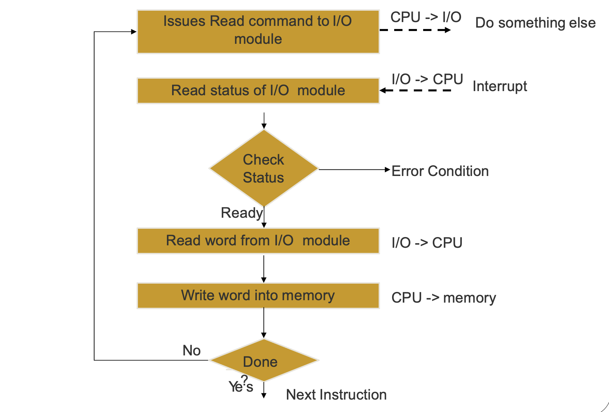
ConsToo much context switchingAn interrupt is generated for every byte or word that is copied to or fetched from the input deviceThe reason is that only the CPU can access the memory and therefore needs to store each byte or word by itself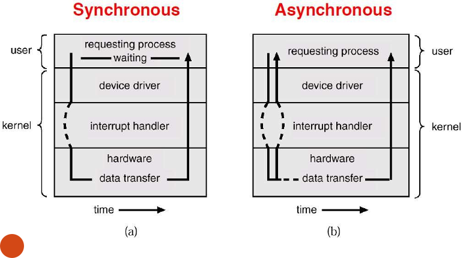
DMADMA stands for Direct Memory Access. It is a feature of computer systems that allows certain hardware devices to transfer data directly to or from the system memory without involving the CPU (Central Processing Unit). DMA provides a more efficient way of transferring data compared to traditional CPU-managed I/O operations.In a typical I/O operation without DMA, the CPU is involved in the entire data transfer process. The CPU initiates the 1/0 operation, transfers data between the I/0 device and the memory, and performs necessary data processing. This approach can be time-consuming and can tie up the CPU, limiting its availability for other tasks.DMA alleviates this burden on the CPU by enabling data transfer between the 1/O device and memory without CPU intervention. Here's how DMA works:1.Setup: The CPU sets up the DMA controller by specifying the source and destination memory addresses, transfer size, and other necessary parameters.2.Initiation: Once the DMA controller is configured, the CPU initiates the DMA transfer by issuing a command or triggering a signal. The DMA controller takes over the data transfer process from this point onward.3.Data Transfer: The DMA controller transfers data directly between the I/O device and memory. It bypasses the CPU and uses a dedicated DMA channel or bus to perform the transfer.4.Completion: Once the data transfer is complete, the DMA controller interrupts the CPU to notify it of the completion. The CPU can then perform any necessary processing on the transferred data or initiate further actions.DMA is used / needed for IO devices to communicate with memory without the involvement of CPU. On the other hand, IO Interrupts are simply interrupts generated by I/O devices to get the CPU attention. This could be for example to inform CPU about requested data so that CPU can put that into the memory in case if DMA is not used.Cycle StealingOnly once access to memory is possible at a time. Therefore, DMA steals the memory access from the Machine Cycle9 to be able to use the memory. During this time, the CPU has to wait for memory access. It can slow it down but this still is more efficient then tying up the entire CPU rather than only its access to memory. - Device QueueMultiple requests to use a specific device are put hereOn the completion of that specific I/O operation, the state of the process is transitioned to Ready State15
- Ready StateLoaded in the main memory waiting to be executedReady QueueThe multiple processes which are yet to be executed are queued hereShort-Term / CPUSchedules processes from ready queue to be executed into the CPUShort-term scheduler is invoked frequently (milliseconds) -> (must be fast)Algorithms should be devised from the number of processes available in the ready queue such that the throughput of the CPU can be maximum
- Daisy ChainingThe daisy-chaining method involves connecting all the devices that can request an interrupt in a serial manner. This configuration is governed by the priority of the devices. The device with the highest priority is placed first followed by the second highest priority device and so on.
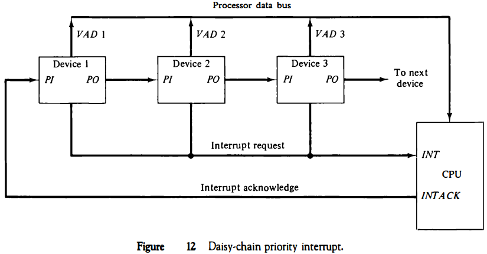
- CPU Schedulers
 Long-Term / Job SchedulerSchedules jobs from the job queue to be put into the main memoryLong-term scheduler is invoked infrequently (seconds, minutes) -> (may be slow)Manages the Degree of MultiprogrammingKeeps track of the count of available space in the memory to load processesA mixture of I/O bound and CPU Bound processes are selected to be loaded in the memoryShort-Term / CPUSchedules processes from ready queue to be executed into the CPUShort-term scheduler is invoked frequently (milliseconds) -> (must be fast)Algorithms should be devised from the number of processes available in the ready queue such that the throughput of the CPU can be maximumMedium-Term / SwapperIntroduces a 7 State Process Model18Swaps in and out some processes from ready or waiting queue in to Suspend queueThe process that is swapped out is called the victim processDispatch LatencyThe time it takes for the dispatcher to stop one process and start another running is known as the dispatch latency
Long-Term / Job SchedulerSchedules jobs from the job queue to be put into the main memoryLong-term scheduler is invoked infrequently (seconds, minutes) -> (may be slow)Manages the Degree of MultiprogrammingKeeps track of the count of available space in the memory to load processesA mixture of I/O bound and CPU Bound processes are selected to be loaded in the memoryShort-Term / CPUSchedules processes from ready queue to be executed into the CPUShort-term scheduler is invoked frequently (milliseconds) -> (must be fast)Algorithms should be devised from the number of processes available in the ready queue such that the throughput of the CPU can be maximumMedium-Term / SwapperIntroduces a 7 State Process Model18Swaps in and out some processes from ready or waiting queue in to Suspend queueThe process that is swapped out is called the victim processDispatch LatencyThe time it takes for the dispatcher to stop one process and start another running is known as the dispatch latency - 7 State Process Model
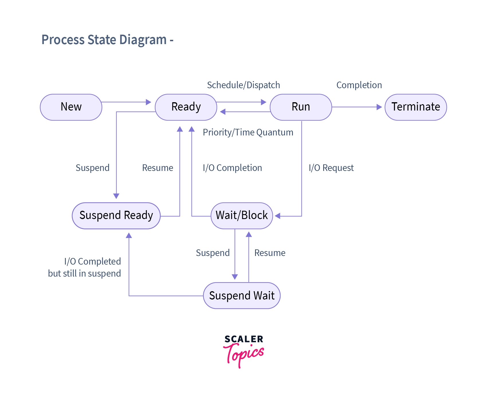
New StateJobs are called programs hereWaiting in the hard disk for memory allocationLinking and Loading is still yet to be doneProgram is waiting to be converted into a process / Allocate a Process Control BlockJob QueueThe programs which are still yet to be converted to a process are waiting hereLong-Term / Job SchedulerSchedules jobs from the job queue to be put into the main memoryLong-term scheduler is invoked infrequently (seconds, minutes) -> (may be slow)Manages the Degree of MultiprogrammingKeeps track of the count of available space in the memory to load processesA mixture of I/O bound and CPU Bound processes are selected to be loaded in the memoryReady StateLoaded in the main memory waiting to be executedReady QueueThe multiple processes which are yet to be executed are queued hereRunning StateThe process is executed in the CPU in hereMigrations from Running to Ready StageInterrupts between processingBased on Scheduling TimeWaiting StateIf a process while in running stage requires an I/O event to occur then it is put into this stageProcess requesting I/O operations are put hereDevice QueueMultiple requests to use a specific device are put hereOn the completion of that specific I/O operation, the state of the process is transitioned to Ready StateExit StateIf a process is completed entirely then it is put hereSuspending / Swapping ProcessesRemove process from memory, store on disk, bring back in from disk to continue executionMedium-Term / SwapperIntroduces a 7 State Process ModelSwaps in and out some processes from ready or waiting queue in to Suspend queueThe process that is swapped out is called the victim processDispatch LatencyThe time it takes for the dispatcher to stop one process and start another running is known as the dispatch latencyWhy is there a need to Suspend Processes?Swapping may be necessary to improve the job mix, or because a change in memory requirements has over committed available memory, requiring memory to be freed upTo Free ResourcesFree up Memory / CPU use by that specific processI/O OperationsThe process maybe waiting for the I/O operation to be completedSynchronisation and CoordinationThe process may be waiting for some other process to completeSuspend Ready StateIf memory becomes full, there is a need to swap out some processes from main memory into the secondary memory, thus in that scenario, we will move those processes from Ready State to Suspend Ready StateThat is they are ready to execute but are residing in the secondary memoryThe operating system prefers to suspend a blocked process instead of a ready process as blocked process cannot be executed while a ready process can be, but if a sufficiently large memory is required then the processes in ready state are transitioned to suspend ready state in-order to free up the memory.Suspend Blocked StateIn this state, a process is suspended but waiting for a specific event to occur, such as input from a user or completion of an I/O operation. The process is not eligible for execution until the event it is waiting for happensIf the wait is complete and the process is ready to execute further, it still has the state of Suspended and thus will be moved to the Suspend Ready State - 5 State Process ModelThe 5 State Process Model
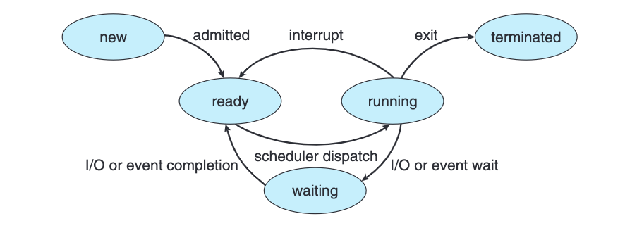
New StateJobs are called programs hereWaiting in the hard disk for memory allocationLinking and Loading is still yet to be doneProgram is waiting to be converted into a process / Allocate a Process Control Block20Job QueueThe programs which are still yet to be converted to a process are waiting hereReady StateLoaded in the main memory waiting to be executedReady QueueThe multiple processes which are yet to be executed are queued hereRunning StateThe process is executed in the CPU in hereMigrations from Running to Ready StageInterrupts between processingBased on Scheduling Time21Waiting StateIf a process while in running stage requires an I/O event to occur then it is put into this stageProcess requesting I/O operations are put hereDevice QueueMultiple requests to use a specific device are put hereOn the completion of that specific I/O operation, the state of the process is transitioned to Ready State15Exit StateIf a process is completed entirely then it is put here - PCBEach process is represented in the operating system by a process control block (PCB)—also called a task control block.PCB simply serves as the repository for all the data needed to start, or restart, a process, along with some accounting data.Process state. The state may be new, ready, running, waiting, halted, and so on.Program counter. The counter indicates the address of the next instruction to be executed for this process.CPU registers. The registers vary in number and type, depending on the computer architecture. They include accumulators, index registers, stack pointers, and general-purpose registers, plus any condition-code information. Along with the program counter, this state information must be saved when an interrupt occurs, to allow the process to be continued correctly afterward when it is rescheduled to run.CPU-scheduling information. This information includes a process priority, pointers to scheduling queues, and any other scheduling parameters.Memory-management information. This information may include such items as the value of the base and limit registers and the page tables, or the segment tables, depending on the memory system used by the operating system.Accounting information. This information includes the amount of CPU and real time used, time limits, account numbers, job or process numbers, and so on.I/O status information. This information includes the list of I/O devices allocated to the process, a list of open files, and so on.A Process Control Block of a Process
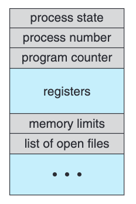
- Time QuantumThe CPU time which is to be assigned to each processes
- Medium-Term / SwapperIntroduces a 7 State Process Model18Swaps in and out some processes from ready or waiting queue in to Suspend queueThe process that is swapped out is called the victim processDispatch LatencyThe time it takes for the dispatcher to stop one process and start another running is known as the dispatch latency
- ProcessProgram in ExecutionA process has a Process Control Block20A process is the unit of work in most systems. Such a system consists of a collectionof processes: operating system processes execute system code and user processes executeuser code. All these processes may execute concurrently.StateThe state of a process is defined in part by the current activity of that process.Jobs or Process?Although we personally prefer the more contemporary term process, the term job has historical significance, as much of operating system theory and terminology was developed during a time when the major activity of operating systems was job processing. Therefore, in some appropriate instances we use job when describing the role of the operating system. As an example, it would be misleading to avoid the use of commonly accepted terms that include the word job (such as job scheduling) simply because process has superseded job.Process or Program
Program Process Passive Entity Active Entity Written in a specific language The active program loaded in the memory Additional Library Files are to be linked to the program through a linker The process is the final product of the program Loader loads the program into the memory by allocating some memory to turn it into a process The program when loaded into the memory is called a process Single Thread ProcessConsists of a single program counterThis Program counter points to the next instruction to executeMulti-Thread ProcessConsists of multiple program counters each belonging to a threadServes the same purpose of pointing to the next instructionProcess TableThe process table is an array of PCB’s, that means logically contains a PCB for all of the current processes in the systemTypesZombie ProcessA process that has completed its execution but still has an entry in the process table, waiting for its parent process to read its exit statusWhat about the resources consumed by the Zombie Process?Until the zombie process is reaped by the parent, it consumes only a small amount of memory for storing its process table entry and other essential information. However, it does not consume any CPU resources as it is no longer executing any code.Orphan Processif a parent did not invoke wait() and instead terminated, thereby leaving its child processes as orphans.What about the orphan process whose Parents are terminated?The init process, usually identified as process ID 1, is the ancestor of all other processes in the system and serves as the ultimate parent process. It automatically becomes the parent of any orphaned processes (i.e., processes whose parent has terminated) and takes responsibility for reaping their exit statuses. This ensures that no zombie processes accumulate in the system.Process Models5 State Process Model197 State Process Model18Process Synchronisation24 - SynchronisationWhen we have multiple processes running at the same time (i.e. concurrently) we know that we must protect them from one another but also at the same time we also might want multiple threads to work on a same problem and thus synchronisation is required.Race ConditionConflicts that can arose as process / threads share same memory space / variablesA situation like this, where several processes access and manipulate the same data concurrently and the outcome of the execution depends on the particular order in which the access takes place, is called a race conditionWe need to avoid this race conditionRace condition when assigning a pid.
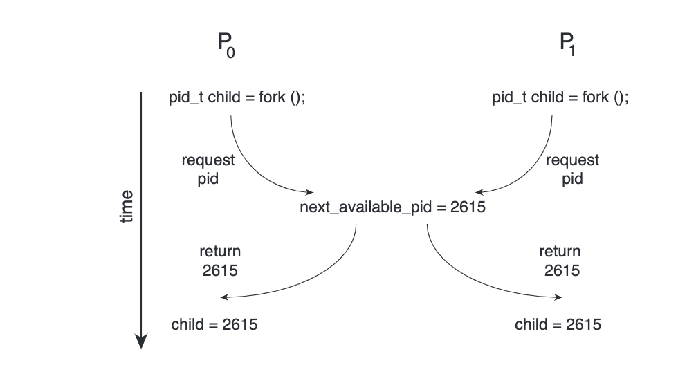
Critical SectionWhen there is shared memory but the mode is in non-shareableThat piece of code where multiple processes / threads access the same shared dataConsider a system consisting of n processes{P0 , P1 , ..., P n−1 }. Each process has a segment of code, called a critical section in which the process may be accessing — and updating — data that is shared with at least one other process. The important feature of the system is that, when one process is executing in its critical section, no other process is allowed to execute in its critical section. That is, no two processes are executing in their critical sections at the same time.General structure of a typical process 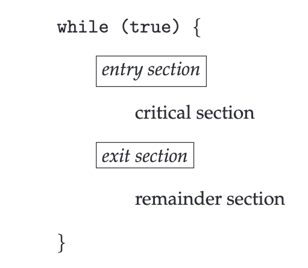
Each process must request permission to enter its critical section. The section of code implementing this request is the entry section. The critical section may be followed by an exit section. The remaining code is the remainder sectionSolutions to Race Condition / Critical SectionRequired Criteria to FulfilMutual ExclusionIf process Pi is executing in its critical section, then no other processes can be executing in their critical sectionsif one process is executing its critical section then no other co-operative process should be allowed to execute its dependent critical section at same time.Mutual Exclusion ProgressIf no process is executing in its critical section and some processes wish to enter their critical sections, then only those processes that are not executing in their remainder sections can participate in deciding which will enter its critical section next, and this selection cannot be postponed indefinitely.If only one process wants to enter, it should be able to.If two or more want to enter, one of them should succeed.No process in its remainder section can participate in this decisionSelection should not be postponed indefinitelyNo deadlockIf both process can run individually one after other in any order (firstly P_0 then P_1 or firstly P_1 then P_0) without any preemption in between then we can say progress is there.ProgressBounded WaitingThere exists a bound, or limit, on the number of times that other processes are allowed to enter their critical sections after a process has made a request to enter its critical section and before that request is granted.if one process(X) is executing its critical section and other cooperative process(Y) is waiting to go in critical section then when X is completed and if again X wants to go in critical section it should be not be allowed as Y is waiting for Critical section for a long time so Y must get chance before X.Bounded WaitingSoftware SolutionsLock VariablesWe can set a variable as our FLAG to enter critical section or notA Process which enters critical section turns the FLAG to false / true and hence the other processes wait for that flag in order to access the critical sectionCflag = NULLCwhile(true){ // Entry Section while(flag == 1); flag = 1 // Critical Section // Exit Section flag = 0 // Remainder Section }Cwhile(true){ // Entry Section while(flag == 1); flag = 1 // Critical Section // Exit Section flag = 0; // Remainder Section }However, Mutual Exclusion might not be followedWhat if both processes check the flag condition at the same time and find it true?Strict Alteration with One VariableSingle Variable as a turnCturn = 0Cwhile(true){ // Entry Section while(turn != 0); // Critical Section // Exit Section turn = 1; // Remainder Section }Cwhile(true){ // Entry Section while(turn != 1); // Critical Section // Exit Section turn = 0; // Remainder Section }It satisfies Mutual Exclusion but Progress is not maintainedProcess P2 cannot run before P1 as the value of turn = 0 and thus it will busy waitStrict Alteration with ArrayAn Array of Flags Determining Need to AccessCflag[2] = {0, 0}Cwhile(true){ // Entry Section flag[0] = 1; while(flag[1] == 1); // Critical Section // Exit Section flag[0] = 0; // Remainder Section }Cwhile(true){ // Entry Section flag[1] = 1; while(flag[0] == 1); // Critical Section // Exit Section flag[1] = 0; // Remainder Section }Satisfies all conditionsDeadlock can occur if both program first execute their first conditions and the wait for each otherPeterson's SolutionWe utilise both the turn and flag array of the Strict Alterationcturn = 1 interested[2] = [0, 0]Cwhile(true){ // Entry Section interested[0] = TRUE; turn = 1; while(interested[1] == true && turn == 1); // Critical Section // Exit Section interested[0] = FALSE; }Cwhile(true){ // Entry Section interested[1] = TRUE; turn = 0; while(interested[0] == true && turn == 0); // Critical Section // Exit Section interested[1] = FALSE; }Peterson solution isn’t practical because it can not solve critical section problem for more than two processes at the same timeHardware SolutionsTest and SetWe can build a function that provides atomic behaviour for our critical sectionCbool TestAndSet(bool *target){ bool returnVal = *target; *target = true; return returnVal; }Cbool lock = falseCwhile(true){ // Entry Section while(TestAndSet(&lock)); // Critical Section // Exit Section lock = false; }Cwhile(true){ // Entry Section while(TestAndSet(&lock)); // Critical Section // Exit Section lock = false; }Mutual Exclusion is thereProgress is thereBounded Waiting is not thereWhat if the same process keeps going to the critical section in the while loop while there is no context switching in a scenario?Fetch and AddCint FAA(int &s, int a){ int temp = s; s = s + a; return temp; }Cs = 0; turn = 0;Cwhile(true){ // Entry Section me = FAA(s, 1); while(turn < me); // Critical Section // Exit Section FAA(turn, 1); }Mutual Exclusion satisfiedProgress is achievedBounded Wait is also thereSemaphoreA semaphore S is an integer variable that, apart from initialisation, is accessed only through two standard atomic operations: wait() and signal().Csignal(S){ // Turn On S++; }Cwait(S){ while(S <= 0); S--; // Turn Off }N Process SolutionConsists of a single Variable that manages the waiting or access to the critical sectionInitialised with 1 or N which allows the count of processes that can access the critical sectionConsists of Wait Function which makes the process wait according to the value of SUpon Exiting the value of S is incrementedSatisfies Mutual ExclusionSatisfies ProgressDoes not satisfy Bounded WaitMutexMutual Exclusion VariableThe semaphore variable that can be owned by one process at a timeApplicationsCritical Section ProblemDeciding Order of ExecutionWe can utilise this by using multiple Semaphore MutexesManaging multiple resourcesSuch as printers that would run simultaneouslyClassical ProblemsBounded Buffer ProblemProducer - Consumer Synchronisation can be achievedReader-writers ProblemWe can restrict writing when something is being readDining Philosopher Problem
ProgressIf no process is executing in its critical section and some processes wish to enter their critical sections, then only those processes that are not executing in their remainder sections can participate in deciding which will enter its critical section next, and this selection cannot be postponed indefinitely.If only one process wants to enter, it should be able to.If two or more want to enter, one of them should succeed.No process in its remainder section can participate in this decisionSelection should not be postponed indefinitelyNo deadlockIf both process can run individually one after other in any order (firstly P_0 then P_1 or firstly P_1 then P_0) without any preemption in between then we can say progress is there.ProgressBounded WaitingThere exists a bound, or limit, on the number of times that other processes are allowed to enter their critical sections after a process has made a request to enter its critical section and before that request is granted.if one process(X) is executing its critical section and other cooperative process(Y) is waiting to go in critical section then when X is completed and if again X wants to go in critical section it should be not be allowed as Y is waiting for Critical section for a long time so Y must get chance before X.Bounded WaitingSoftware SolutionsLock VariablesWe can set a variable as our FLAG to enter critical section or notA Process which enters critical section turns the FLAG to false / true and hence the other processes wait for that flag in order to access the critical sectionCflag = NULLCwhile(true){ // Entry Section while(flag == 1); flag = 1 // Critical Section // Exit Section flag = 0 // Remainder Section }Cwhile(true){ // Entry Section while(flag == 1); flag = 1 // Critical Section // Exit Section flag = 0; // Remainder Section }However, Mutual Exclusion might not be followedWhat if both processes check the flag condition at the same time and find it true?Strict Alteration with One VariableSingle Variable as a turnCturn = 0Cwhile(true){ // Entry Section while(turn != 0); // Critical Section // Exit Section turn = 1; // Remainder Section }Cwhile(true){ // Entry Section while(turn != 1); // Critical Section // Exit Section turn = 0; // Remainder Section }It satisfies Mutual Exclusion but Progress is not maintainedProcess P2 cannot run before P1 as the value of turn = 0 and thus it will busy waitStrict Alteration with ArrayAn Array of Flags Determining Need to AccessCflag[2] = {0, 0}Cwhile(true){ // Entry Section flag[0] = 1; while(flag[1] == 1); // Critical Section // Exit Section flag[0] = 0; // Remainder Section }Cwhile(true){ // Entry Section flag[1] = 1; while(flag[0] == 1); // Critical Section // Exit Section flag[1] = 0; // Remainder Section }Satisfies all conditionsDeadlock can occur if both program first execute their first conditions and the wait for each otherPeterson's SolutionWe utilise both the turn and flag array of the Strict Alterationcturn = 1 interested[2] = [0, 0]Cwhile(true){ // Entry Section interested[0] = TRUE; turn = 1; while(interested[1] == true && turn == 1); // Critical Section // Exit Section interested[0] = FALSE; }Cwhile(true){ // Entry Section interested[1] = TRUE; turn = 0; while(interested[0] == true && turn == 0); // Critical Section // Exit Section interested[1] = FALSE; }Peterson solution isn’t practical because it can not solve critical section problem for more than two processes at the same timeHardware SolutionsTest and SetWe can build a function that provides atomic behaviour for our critical sectionCbool TestAndSet(bool *target){ bool returnVal = *target; *target = true; return returnVal; }Cbool lock = falseCwhile(true){ // Entry Section while(TestAndSet(&lock)); // Critical Section // Exit Section lock = false; }Cwhile(true){ // Entry Section while(TestAndSet(&lock)); // Critical Section // Exit Section lock = false; }Mutual Exclusion is thereProgress is thereBounded Waiting is not thereWhat if the same process keeps going to the critical section in the while loop while there is no context switching in a scenario?Fetch and AddCint FAA(int &s, int a){ int temp = s; s = s + a; return temp; }Cs = 0; turn = 0;Cwhile(true){ // Entry Section me = FAA(s, 1); while(turn < me); // Critical Section // Exit Section FAA(turn, 1); }Mutual Exclusion satisfiedProgress is achievedBounded Wait is also thereSemaphoreA semaphore S is an integer variable that, apart from initialisation, is accessed only through two standard atomic operations: wait() and signal().Csignal(S){ // Turn On S++; }Cwait(S){ while(S <= 0); S--; // Turn Off }N Process SolutionConsists of a single Variable that manages the waiting or access to the critical sectionInitialised with 1 or N which allows the count of processes that can access the critical sectionConsists of Wait Function which makes the process wait according to the value of SUpon Exiting the value of S is incrementedSatisfies Mutual ExclusionSatisfies ProgressDoes not satisfy Bounded WaitMutexMutual Exclusion VariableThe semaphore variable that can be owned by one process at a timeApplicationsCritical Section ProblemDeciding Order of ExecutionWe can utilise this by using multiple Semaphore MutexesManaging multiple resourcesSuch as printers that would run simultaneouslyClassical ProblemsBounded Buffer ProblemProducer - Consumer Synchronisation can be achievedReader-writers ProblemWe can restrict writing when something is being readDining Philosopher Problem - System Calls for ProcessesWe can use system calls to view, create and modify the system processesSystem calls provide the interface between a process and the OS. These calls are generally available as assembly language instructions. The system call interface layer contains entry point in the kernel code; because all system resources are managed by the kernel any user or application request that involves access to any system resource must be handled by the kernel code, but user process must not be given open access to the kernel code for security reasons. So that user processes can invoke the execution of kernel code, several openings into the kernel code, also called system calls, are provided. System callsHow do System Calls Work?
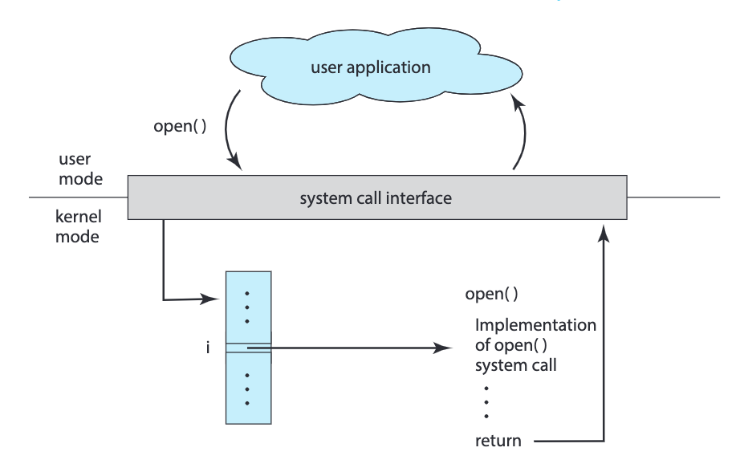
System calls can be divided into six major categories: (1) process control,(2) file management, (3) device management, (4) information maintenance,(5) communications, and (6) protection.Pictorial view of the steps needed for execution of a system call  The kernel uses call number to index a kernel table (the dispatch table) which contains pointers to service routines for all system callsFork26Exec
The kernel uses call number to index a kernel table (the dispatch table) which contains pointers to service routines for all system callsFork26Exec - ForkWhen a process executes a fork command it's whole heap, stack and data is duplicated into the child process, it created.Things to noteThe Program Counter value is also copied into the child process. Thus, the program execution is resumed from where the parent issued the fork commandThe fork command returns the parent (the process calling it) the child id and to child an ID of
Origin Fork Command Child Process Return 0 Parent Process Returns > 0 Error While Creating Returns -1 Examples - Multiple Forksc++int main() { fork(); printf("Hello World!\n"); return 0; } // Ouput Hello World // by Child Process Hello World // by Parent Processc++int main() { fork(); fork(); printf("Hello World!\n"); return 0; } // Ouput Hello World // by Child 1.1 Process Hello World // by Child 1 Process Hello World // by Child 2 Process Hello World // by Parent Processc++int main() { fork(); fork(); fork(); printf("Hello World!\n"); return 0; } - WaitPOSIX System call to make the parent process wait for all of its child processes to complete / run some status using the Exit() system callDemonstration of wait() System Call
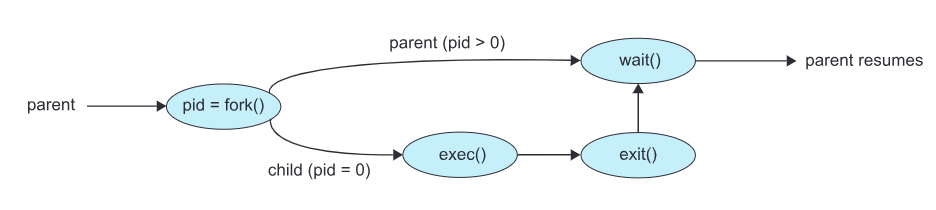
If any process has more than one child processes, then after calling wait(), parent process has to be in wait state if no child terminatesIf only one child process is terminated, then wait() returns process ID of the terminated child process.If more than one child processes are terminated than wait() reap any arbitrarily child and return a process ID of that child processWhen wait() returns they also define exit status via pointer, If pointer is not NULLIf any process has no child process then wait() returns -1 immediately. - Scheduling AlgorithmsBurst TimeProcess Execution TimeTurn Around TimeCompletion Time - Arrival TimeWaiting TimeTurn Around Time - Bust TimeAverage Waiting TimeWaiting Time / Number of ProcessesPriority NumbersBased on these numbers, the algorithm prioritises processesThe lowest the number the higher the priorityThe highest the number the lowest the priorityTypesNon-PreemptiveThese algorithms have no control over the preemption of the process, thus the next process can only come when the previous one is done completing its bust timeSJF - Shortest Job First
Processes Arrival Time Burst Time Turn Around Time Waiting Time P1 0 7 7 0 P2 2 4 10 6 P3 4 1 4 3 P4 5 4 11 7 FCF - First Come FirstProcesses Burst Time Turn Around Time Waiting Time P1 24 24 0 P2 3 27 24 P3 3 30 27 P4 5 35 30 PreemptiveSRTF - Shortest Remaining Time FirstPreemptive version of Shortest Job First4Preempt the CPU based on the shortest time required by a processProcesses Arrival Time Burst Time Turn Around Time Waiting Time P1 0 7 16 9 P2 2 4 5 1 P3 4 1 1 0 P4 5 4 6 2 RR - Round RobinProvide equal Time Quantum to all processesA queue is maintained where processes waiting are put one after anotherThe next processes is picked from the top of the queueTime QuantumThe CPU time which is to be assigned to each processesExample Time Quantum = 2Process Arrival Time Burst Time Turn Around Time Waiting Time P1 0 5 2 7 P2 1 4 10 6 P3 2 2 4 2 P4 3 1 6 5 Example Time Quantum = 10Process Arrival Time Burst Time Turn Around Time Waiting Time P1 0 20 20 0 P2 25 25 45 20 P3 30 25 55 30 P4 60 15 30 15 P5 100 10 10 0 P6 105 10 15 5 Multi Level Queue SchedulingMultiple Queues are maintained with each Queue having a PriorityEach Queue may represent a process, such as System Processes, Interactive Processes, Student Processes etc.Lower priority queues will only be executed until the higher priority queues are not emptyIf lower priority queue process is executing and within that time a higher priority queue process arrives then the lower priority queue process is preempted and higher priority process is executed first.Processes Arrival Time Burst Time Queue Number P1 0 4 1 P2 0 3 1 P4 10 5 1 P3 0 8 2 Multi Level Feedback QueueInitially all processes belong to the first queueShift the processes to below queues if they are not bursted within the current queueLast queue always have FCFSProcesses Burst Time P1 30 P2 20 P3 10 - ThreadsA single process can have multiple code segments which are called threads that run concurrently within the context of that process.Multiple tasks within a process can be implemented by separate threadsProcesses that utilise threads are called Multithreaded ProcessesEvery thread belongs to a Process23A process initially has only one thread called the main threadThreads Share:CodeData / HeapFilesEach Thread Holds its Unique:
Process Thread Heavy Light Interaction with OS No Interaction with the OS Operate Independently Sharing of data between other threads Have a PCB Have a TCB TCBThread Control BlockStores the data related to each threadStored within the program's memoryTypes User ThreadsManagement is done by the User-Level threads libraryPrimary Threads Library:POSIX PthreadsWindows ThreadsJava ThreadsKernel ThreadsSystem Level Threads, which belong to the System Processes, acting on the KernelVirtually all general purpose operating systems have theseCorrelation with 7 State Process Model18If one of the thread of a process requires an I/O operation, according to the Process Model used in the CPU, that entire process needs to be blocked and hence all of its other threads will also be blockedIf a process or even if one of its thread requires an I/O operation, the whole process is blockedThreads share data and thus to control synchronisation, all other threads should be blocked when even one of the thread is communicating with I/OExceptionKernel Threads31They are working within the Kernel Area and thus Kernel / OS are familiar that which thread requires I/O and how the synchronisation should be dealt
User ThreadsManagement is done by the User-Level threads libraryPrimary Threads Library:POSIX PthreadsWindows ThreadsJava ThreadsKernel ThreadsSystem Level Threads, which belong to the System Processes, acting on the KernelVirtually all general purpose operating systems have theseCorrelation with 7 State Process Model18If one of the thread of a process requires an I/O operation, according to the Process Model used in the CPU, that entire process needs to be blocked and hence all of its other threads will also be blockedIf a process or even if one of its thread requires an I/O operation, the whole process is blockedThreads share data and thus to control synchronisation, all other threads should be blocked when even one of the thread is communicating with I/OExceptionKernel Threads31They are working within the Kernel Area and thus Kernel / OS are familiar that which thread requires I/O and how the synchronisation should be dealtUser Threads Kernel Threads Lower Overhead of Switching Higher Overhead of Switching Implementation by a Thread Library Implementation directly by the OS / Kernel Creation / ImplementationCpthread_create(pthread_t*, NULL, void*, void*) pthread_t - Pointer of Thread ID return -1 = Error return 0 = Successful CreationCommands Description pthread_create Creation of a thread pthread_self Get the current thread id pthread_join Wait for a thread pthread_exit Exit a thread without exiting process ExampleConsider we have the following function: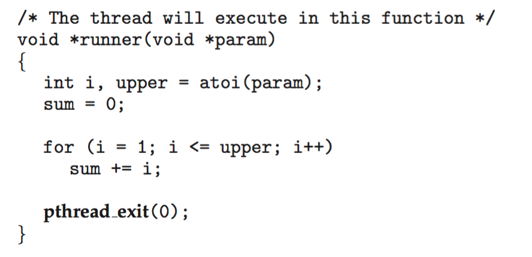
Following is the main function / process: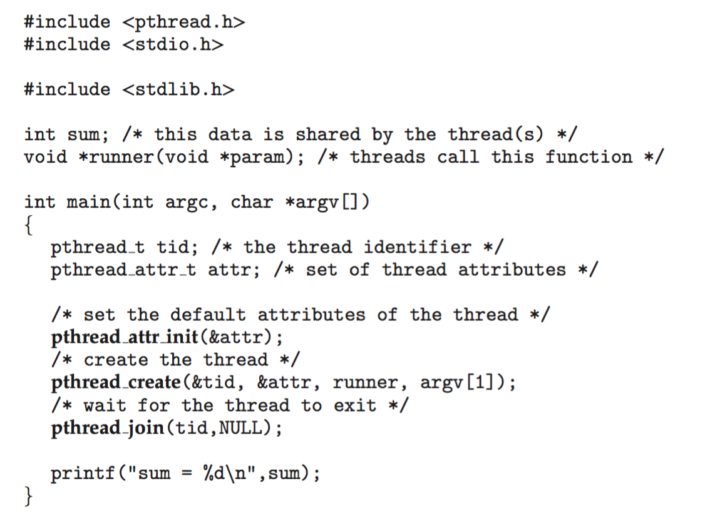
MultithreadingMultithreading allows the application to divide its task into individual threads. In multi-threads, the same process or task can be done by the number of threads, or we can say that there is more than one thread to perform the task in multithreading. With the use of multithreading, multitasking can be achievedMultithreading Models32In an operating system, threads are divided into the user-level thread and the Kernel-level thread. User-level threads handled independent form above the kernel and thereby managed without any kernel support. On the opposite hand, the operating system directly manages the kernel-level threads. Nevertheless, there must be a form of relationship between user-level and kernel-level threads.Process Synchronisation24MiscWhat happens when you call a fork() in a thread?The fork() system call creates a new process by duplicating the calling process. However, when called within a multithreaded program, the behaviour can be complex and platform-dependent. In general, the new process will have a single thread, a copy of the calling thread, and any other threads in the calling process are not duplicated. The child process will start its execution from the point of the fork() call.Examplecfunc(){ pid_t pid; for(int i=0; i<2; i++) pid = fork(); printf("Bye!"); exit(NULL); } pid_t t1; pthread_create(&t1, NULL, func, NULL); pthread_join(&t1, NULL); fork() printf("Hello!");What happens if process returns without waiting for its threads?If the thread has done some execution while the process was active then that will count however, as soon as the parent process terminates, all of its threads are discarded.What happens when a thread calls an exit() function?When a thread calls the exit() function, it terminates not only the calling thread but also the entire process. The exit() function is typically used to gracefully terminate the program, and it causes the termination of all threads within the process.Can a function that is a part of the program be called from a thread?Yes, a function that is part of the program can be called from a thread. Threads in a program share the same address space, and they can execute any function or code that is accessible within that address space. However, caution is needed to ensure proper synchronisation mechanisms (e.g., mutexes) are in place to avoid data corruption in a multi-threaded environment.What happens when you call pthread_exit() in the main thread?If pthread_exit() is called in the main thread, it will terminate just the main thread, not the entire process. Other threads, if any, will continue to execute. It's a way to exit the main thread while leaving other threads running. The resources associated with the main thread will be released once it exits.Why do we fork when we can use threads?Forking and using threads serve different purposes. Forking creates a new process, which is useful for parallelism and creating independent processes. Each process has its own address space and runs independently of the others. On the other hand, threads share the same address space, making them suitable for tasks that can benefit from shared data and communication between threads. The choice between forking and using threads depends on the specific requirements of the task and the desired concurrency model. In some cases, a combination of both processes and threads might be appropriate. - This Program counter points to the next instruction to execute
- Kernel ThreadsSystem Level Threads, which belong to the System Processes, acting on the KernelVirtually all general purpose operating systems have these
- Multithreading Models2023-10-05 09:14:59Multithreading allows the application to divide its task into individual threads. In multi-threads, the same process or task can be done by the number of threads, or we can say that there is more than one thread to perform the task in multithreading. With the use of multithreading, multitasking can be achieved
 The main drawback of single threading systems is that only one task can be performed at a time, so to overcome the drawback of this single threading, there is multithreading that allows multiple tasks to be performed.For example:
The main drawback of single threading systems is that only one task can be performed at a time, so to overcome the drawback of this single threading, there is multithreading that allows multiple tasks to be performed.For example: In the above example, client1, client2, and client3 are accessing the web server without any waiting. In multithreading, several tasks can run at the same time.In an operating system, threads are divided into the user-level thread and the Kernel-level thread. User-level threads handled independent form above the kernel and thereby managed without any kernel support. On the opposite hand, the operating system directly manages the kernel-level threads. Nevertheless, there must be a form of relationship between user-level and kernel-level threads.A kernel level thread mapped to user level thread is responsible for handling the system calls and os level specific operations for that particular user level thread.There exists three established multithreading models classifying these relationships are:Many to one multithreading modelOne to one multithreading modelMany to Many multithreading modelsMany to one Multithreading Model:The many to one model maps many user levels threads to one kernel thread. This type of relationship facilitates an effective context-switching environment, easily implemented even on the simple kernel with no thread support.The disadvantage of this model is that since there is only one kernel-level thread schedule at any given time, this model cannot take advantage of the hardware acceleration offered by multithreaded processes or multi-processor systems. In this, all the thread management is done in the user-space. If blocking comes, this model blocks the whole system.As we can see from the figure, the many to one model associates all user-level threads to single kernel-level threads.
In the above example, client1, client2, and client3 are accessing the web server without any waiting. In multithreading, several tasks can run at the same time.In an operating system, threads are divided into the user-level thread and the Kernel-level thread. User-level threads handled independent form above the kernel and thereby managed without any kernel support. On the opposite hand, the operating system directly manages the kernel-level threads. Nevertheless, there must be a form of relationship between user-level and kernel-level threads.A kernel level thread mapped to user level thread is responsible for handling the system calls and os level specific operations for that particular user level thread.There exists three established multithreading models classifying these relationships are:Many to one multithreading modelOne to one multithreading modelMany to Many multithreading modelsMany to one Multithreading Model:The many to one model maps many user levels threads to one kernel thread. This type of relationship facilitates an effective context-switching environment, easily implemented even on the simple kernel with no thread support.The disadvantage of this model is that since there is only one kernel-level thread schedule at any given time, this model cannot take advantage of the hardware acceleration offered by multithreaded processes or multi-processor systems. In this, all the thread management is done in the user-space. If blocking comes, this model blocks the whole system.As we can see from the figure, the many to one model associates all user-level threads to single kernel-level threads. One to one multithreading modelThe one-to-one model maps a single user-level thread to a single kernel-level thread. This type of relationship facilitates the running of multiple threads in parallel. However, this benefit comes with its drawback. The generation of every new user thread must include creating a corresponding kernel thread causing an overhead, which can hinder the performance of the parent process. Windows series and Linux operating systems try to tackle this problem by limiting the growth of the thread count.As we can see in the figure, one model associates that one user-level thread to a single kernel-level thread.
One to one multithreading modelThe one-to-one model maps a single user-level thread to a single kernel-level thread. This type of relationship facilitates the running of multiple threads in parallel. However, this benefit comes with its drawback. The generation of every new user thread must include creating a corresponding kernel thread causing an overhead, which can hinder the performance of the parent process. Windows series and Linux operating systems try to tackle this problem by limiting the growth of the thread count.As we can see in the figure, one model associates that one user-level thread to a single kernel-level thread. Many to Many multithreading modelIn this type of model, there are several user-level threads and several kernel-level threads. The number of kernel threads created depends upon a particular application. The developer can create as many threads at both levels but may not be the same. The many to many model is a compromise between the other two models. In this model, if any thread makes a blocking system call, the kernel can schedule another thread for execution. Also, with the introduction of multiple threads, complexity is not present as in the previous models. Though this model allows the creation of multiple kernel threads, true concurrency cannot be achieved by this model. This is because the kernel can schedule only one process at a time.Many to many versions of the multithreading model associate several user-level threads to the same or much less variety of kernel-level threads as in the right figure.
Many to Many multithreading modelIn this type of model, there are several user-level threads and several kernel-level threads. The number of kernel threads created depends upon a particular application. The developer can create as many threads at both levels but may not be the same. The many to many model is a compromise between the other two models. In this model, if any thread makes a blocking system call, the kernel can schedule another thread for execution. Also, with the introduction of multiple threads, complexity is not present as in the previous models. Though this model allows the creation of multiple kernel threads, true concurrency cannot be achieved by this model. This is because the kernel can schedule only one process at a time.Many to many versions of the multithreading model associate several user-level threads to the same or much less variety of kernel-level threads as in the right figure.
- Testing Mutual Exclusion, Progress and Bounded Waiting2023-12-31 16:07:23AlgorithmpythonInitially both the flags are false; flag[0] = flag[1] = Falsec// P0 while(true) { flag[0] = True; //wait if P1's turn while(flag[1]==T); {critical section} flag[0] = False }c// P1 while(true) { flag[1] = True; //wait if P0's turn while(flag[0]==T); {critical section} flag[1] = False }Checking Mutual Exclusionif one process is executing its critical section then no other co-operative process should be allowed to execute its dependent critical section at same time.Mutual ExclusionTo check mutual exclusion, preempt processes in any order by intuitively thinking that is there any way they both can go in critical section togetherAttempt 1 of checking mutual exclusion:so initially suppose,P_0 came in CPU and it enters in while(true)it makes flag[0]=T;suppose then preemption happens and P_1 came and it enters in its while(true) and it makes flag[1]=T;now suppose again preemption happens and P_0 came and it runs while(flag[1]==T);and because flag[1]=T so P_0 stuck in while doing nothing.now suppose again preemption happens and P_1 came and it runs while(flag[0]==T);and because flag[0]=T so P_1 stuck in while doing nothing.so now you preempt in any order both process will be stuck here only and will not move ahead so it causes deadlockbut we are not checking deadlock we are checking mutual exclusion which is still there. as no two cooperative process are executing critical section at a time.now again try to execute P_0 and P_1 but this time do preemption in between in different order than previous oneAttempt 2 of checking mutual exclusion:so initially suppose,P_0 came in CPU and it enters in while(true)it makes flag[0]=T;now it runs next statement while(flag[1]==T); and while loop will be ended as flag[1] =F till now. so P_0 enters in Critical section.suppose then preemption happens and P_1 came and it enters in its while(true) and it makes flag[1]=T; and tries to run next statement while(flag[0]==T); which is true because P_0 made flag[0]=T. so P_1 will stuck in while doing nothing.now preemption happens and P_0 came and runs its critical section and made flag[0]=F and terminated.now P_1 came and it was busy waiting for flag[0] to be false which is false now so it will come out of while(flag[0]==T);and will execute its critical section and will make flag[1] = F and terminates.so here also we can see mutual exclusion holds as no two cooperative process execute their critical sections at a time.so now after running like this in my brain i automatically think that if i will run in any manner mutual exclusion will hold good so i am not trying further but if you have little doubt try running both in other possible orders.so i can say that mutual exclusion holds here.Checking ProgressIf both process can run individually one after other in any order (firstly P_0 then P_1 or firstly P_1 then P_0) without any preemption in between then we can say progress is there.ProgressRunning P_0 IndividuallyP_0 came in CPU and it enters in while(true) and it makes flag[0]=T;it runs while(flag[1]==T); and comes out of while loop as flag[1] is still F. so now it runs its critical section and made flag[0]=F and terminated.so P_0 can run individually.Running P_1 IndividuallyP_1 came in CPU and it enters in while(true) it makes flag[1]=T;it runs while(flag[0]==T); and comes out of while loop as flag[0] is still F. so now it runs its critical section and made flag[0]=F and terminated.so P_0 can run individually.similarly try running P_1 first then P_0 then also no problem will come.so both P_1 and P_0 can run individually without any problemso progress is there in this algorithm.Checking Bounded waitingif one process(X) is executing its critical section and other cooperative process(Y) is waiting to go in critical section then when X is completed and if again X wants to go in critical section it should be not be allowed as Y is waiting for Critical section for a long time so Y must get chance before X.Bounded Waitingif this happens then we can say bounded waiting is holding.but if if one process(X) is executing its critical section and other cooperative process(Y) is waiting to go in critical section then when X is completed and if again X wants to go in critical section and it is allowed even though Y is waiting for Critical section for a long time then Bounded Waiting is violated.so to test this firstly make one process(X) to go in critical section and make another process(Y) to wait for critical section and when X completed then again try to execute X even though Y is waiting if X is able to enter again in Critical Section then Bounded waiting is violated and if X is not able to enter again then bounded waiting is there.similarly check by running Y first and then X and then also if bounded waiting there then we can say our algorithm holds bounded waiting.Checking bounded waiting - Iby running P_0 in critical section and making P_1 wait for critical section.P_0 came in CPU and it enters in while(true) it makes flag[0]=T;it runs while(flag[1]==T); and comes out of while loop as flag[1] is still F. so now it is executing its critical sectionNow preemption happens and P_1 came in CPU and it enters in while(true) it makes flag[1]=T;It runs while(flag[0]==T); and stuck there only as flag[0]=T as of now. now preemption happens and P_0 came and it runs its critical section.so we can see currently P_0 is executing its critical section and P_1 is waiting for executing its critical section.now if P_0 executed its critical section and made flag[0]=F and terminated.now even though P_1 is waiting for critical section execution and at the same time you try to again run P_0 in critical sectionsoP_0 came in CPU and it enters in while(true) it makes flag[0]=T;it runs while(flag[1]==T); but flag[1]=T so it will stuck in while loop and will not go to its critical section until P_1 runs and make flag[1]= F againso bounded waiting is holding heresimilarlyChecking bounded waiting - IIby running P_1 in critical section and making P_0 wait for critical sectionand do same as above step and this will also follow bounded waiting.so this in this algorithm Bounded Waiting holds.Resultso we can see Mutual exclusion, Bounded waiting, Progress all holds here .
- DeadLocksDeadlocks arise when there exist a hold and wait situation when multiple processes share multiple resources simultaneously
Process Hold Wait P1 1 2 P2 2 3 P3 3 4 P4 4 5 P5 5 1 Scenario / ExampleConsider two processes that require Printer and Scanner but interchangeably. P1 requires printer first and then scanner while P2 requires scanner first and then printer.At time T1: P1 will acquire Printer and P2 will acquire Scanner Both of them will then further wait for their respective resource to be free and stuck in a deadlockCondition for DeadlockMutual Exclusion37Only one process can use the resource at a single time unitHold and Wait ConditionA thread holding at least one resource is waiting to acquire additional resources held by other threadsNon-Preemptive ConditionA resource can be released only voluntarily by the thread holding it, after that thread has completed its taskCircular Wait ConditionThere exists a set {T0, T1, ..., Tn} of waiting threads such that TO is waiting for a resource that is held by T1, T1 is waiting for a resource that is held by T2, ..., Tn-1 is waiting for a resource that is held by Tn, and Tn is waiting for a resource that is held by T0.We can break this condition to overcome the deadlock in Dining Philosopher Problem37Resource Allocation GraphAllocation Edge: Arrow From Resource to ProcessRequesting Edge: Arrow from Process to ResourceClaim Edge: Dotted Arrow from Process to ResourceSafe SequencesIf we do not follow any of these safe sequences then there will always be a deadlockP3 -> P2 -> P1Avoiding DeadlocksSingle Resource InstanceResource Allocation Graph AlgorithmConditions1.Cyclic Graph2.Single Resource Instance for each ResourceWe won't allow the cyclic graph to be made, we will avoid the requesting edge which converts the graph to a cyclic graphSafe and Unsafe StatesIf we are able to find a safe sequence given the states of the processes, then we can avoid the deadlockIf free resources are less than the available needs of all of the processes, then this can result in a deadlockMultiple Resource InstanceBanker's Algorithm1.If Need[i] Available then Available = Available + Allocation[i]Example 1We can construct safe sequence(s) given the available resource are greater or equal than any of the current process's needTotal Resources AvailableResource Total Available A 10 3 B 5 3 C 7 2 Allocation MatrixProcess Allocation A Allocation B Allocation C Max A Max B Max C Need A Need B Need C P0 0 1 0 7 5 3 7 4 3 P1 2 0 0 3 2 2 1 2 2 P2 3 0 2 9 0 2 6 0 0 P3 2 1 1 2 2 2 0 1 1 P4 0 0 2 4 3 3 4 3 1 Example 2 - Draw Resource Allocation Graph from the MatrixWe can construct safe sequence(s) given the available resource are greater or equal than any of the current process's needTotal Resources AvailableResource Total A 2 B 1 C 1 D 2 E 1 Allocation MatrixProcess Allocation A Allocation B Allocation C Allocation D Allocation E P0 1 0 1 1 0 P1 1 1 0 0 0 P2 0 0 0 1 0 P3 0 0 0 0 0 Need MatrixProcess Need A Need B Need C Need D Need E P0 0 1 0 0 1 P1 0 0 1 0 1 P2 0 0 0 0 1 P3 1 0 1 0 1 - Memory ManagementOnce needs to understand Program Compilation and the concept of Dynamic Loading36 to understandHierarchyRegistersCacheSits between main memory and CPU registersMain MemorySecondary MemoryMemory ManagerPart of OS that manages the memory hierarchy†RelocationAssigning new memory block to the process when it is comes back into the Ready State after being suspendedProtectionA process is only allowed to access it's memory spaceThis is ensured by using the Base and Limit Register. If the requesting memory block address of the program is > the Base Register and < the Limit Register, only then is the block allowed to access that memory blockSharingPhysical Memory OrganisationWe use Base Register and Limit Register to keep track of the memory partitionsWe use Hardware Based Solutions to avoid Critical Section ProblemsBase RegisterKeeps track of the starting address of the partition / block in the memoryLimit RegisterKeeps track of the size / limit of the partition / block in the memoryFixed Sized PartitioningConsInternal FragmentationThe Fixed Sizes when allocated lesser sized processes, have some space left which might be too small to be used by any other upcoming processSolutionsNon-Continuous Memory AllocationVariable Sized PartitioningConsExternal FragmentationThe size of the partitions might break down too small for larger upcoming programs to fit inSolutionsCompactionWe can move our being used memory blocks to the other part of the memory, this can give us free sized blocks combined on the other part of the memoryCoalescing HolesWe can combine multiple neighbouring holes to create space for the larger program to fitPagingEach process is divided into the same count of blocks / frames as the memory is divided into
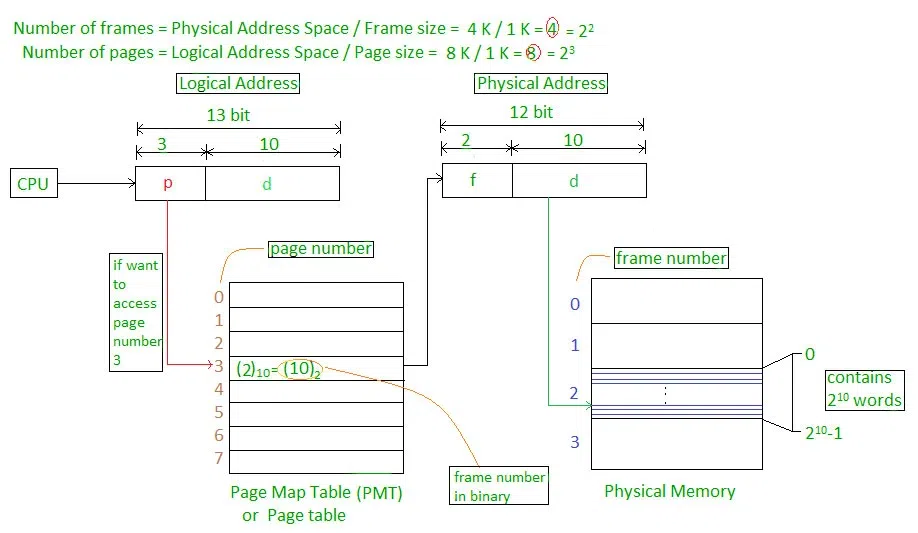
The Paging Process Address Allocation SchemeWe have a Page Number of and a Page Offset which tells us where the designated byte (block of the process we require) is storedPage NumberPage Number tells us the designed divided page assigned to the the byte we seekPage OffsetPage Offset tells us the starting address of the page in the Page TablePage TableThis table stores the addresses of the pages (from where they start)Paging Model of Logical and Physical MemoryAdress Type Memory Segment Origin Logical Address Page Process Physical Address Frame Main Memory Virtual Address Block Secondary Memory Frame and Block sizes will be same for the Paging ModelNumerical ExamplePage Size = Displacements = Offsets = 8 BytesNo of Pages = 4Process Size = Page Size x No of Pages = 8 x 4 = 32Byte Representation Page # D0 D1 D2 D3 D4 D5 D6 D7 00 0 0 1 2 3 4 5 6 7 01 1 8 9 10 11 12 13 14 15 10 2 16 17 18 19 20 21 22 23 11 3 24 25 26 27 28 29 30 31 D Represents DisplacementLogical AddressPage Number (Bits) Displacement Number (Bits) Max Pages in a Process's Address SpaceorPage Table Sizewhere PTES is the page table entry size, the size in bits which store the frame number out of total frames in the Main MemoryPTES can be calculated by dividing the bits of Frame Number by 8 (Converting it into Bytes)Physical AddressFrame Number (Bits) Displacement Number (Bits) The displacement number is same as in the case of Logical AddressFrame Size = 8 BytesNo of Frames = 8Size of Main Memory = 8 x 8 = 64 BytesFrame # D0 D1 D2 D3 D4 D5 D6 D7 0 0 1 2 3 4 5 6 7 1 8 9 10 11 12 13 14 15 2 16 17 18 19 20 21 22 23 3 24 25 26 27 28 29 30 31 Roles of BitmapsMemory is divided into allocation units and each unit is expressed with a bitIf a bit is 1 it represents that the space is occupied while a 0 tell that this is a holeSize of allocation unit is importantSmaller Bitmap UnitLarger bitmap requiredLarger Bitmap UnitSmaller bitmap requiredAllocation units can be in:WordsSeveral KilobytesRoles of Linked ListsEach Node represents a process and a hole. In this way we can find holes within our Linked ListA Node not only stores the the state of the block (process or a hole), it also tells us the:Size of the BlockStarting AddressEnding AddressResources - Dynamic LoadingThe definition is not given to the program before and only given once the loading process is done
- Virtual MemoryPart of the secondary memory that helps in increasing the size of the virtual memoryIn intuition, suspended processes reside in the virtual memoryDemand PagingIf there's a process page that could not be located in the Main Memory, then we will need to find it in the Virtual Memory or other sourcesIf the page is found in the page table, we have a page hit. Else we have a page miss and there's a need to search for that page in the virtual memoryReasons Page Could not be FoundMain Memory is full and we cannot find a frame for the page to be allocatedThat specific page was swapped out as suspended as in the 7 State Process Model18Modification in Page TableAnother column Valid is added to the Page Table for determining validity of the Page, i.e if its loaded into the Main Memory Frames or Not
Frame # Valid 120 1 - 0 If Valid = 0, the Page is not available in the memoryIf Valid = 1, the Page is available somewhere in the memoryPerformancePage Fault RateThe percentage / probability we will be able to find the page in the Page TableEffective Access TimeDemand paging can significantly affect the performance of a computer system and Effective Access Time helps us in computing it's performanceSwap In Cost is the cost of bringing in the pages into the memory from Virtual MemorySwap Out Cost is added if the memory was full and there a need to create some spaceSteps in handling a page fault. 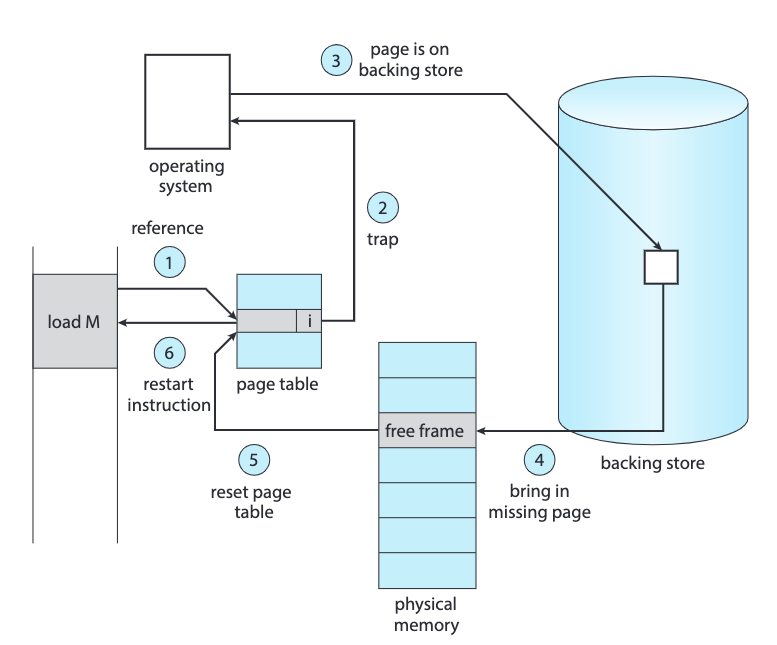
ExampleQuestion 6 (5 points): If memory access time is equal to the year you enrolled in FAST. e.g. 18 nanoseconds, and page fault overhead time is equal to your registration number, e.g. 4111 nanoseconds. If the probability of having a page fault is 0.85, then calculate the Effective Access Time. Here, the page fault overhead time also includes the page swap in and swap out time. Page Replacement PoliciesThe criteria of selecting the page that needs to be swapped out to create space for a page demand can vary and thus we can come up with different policiesWe evaluate an algorithm by running it on a particular string of memory references and computing the number of page faults. The string of memory references is called a reference string.FIFOFirst in First Out StructureThe page which was came the oldest into the memory, i.e which came first and has the longest time in the main memory, will be replaced and swapped outFIFO page-replacement algorithm
Page Replacement PoliciesThe criteria of selecting the page that needs to be swapped out to create space for a page demand can vary and thus we can come up with different policiesWe evaluate an algorithm by running it on a particular string of memory references and computing the number of page faults. The string of memory references is called a reference string.FIFOFirst in First Out StructureThe page which was came the oldest into the memory, i.e which came first and has the longest time in the main memory, will be replaced and swapped outFIFO page-replacement algorithm 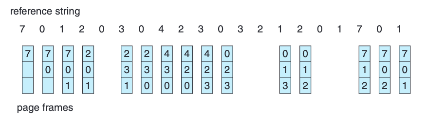
LRULeast Recently UsedWe keep those pages into the memory that are frequently used and discard those which are used least frequentlyLRU looks in the previous pages which were demanded in the reference stringLRU page-replacement algorithm 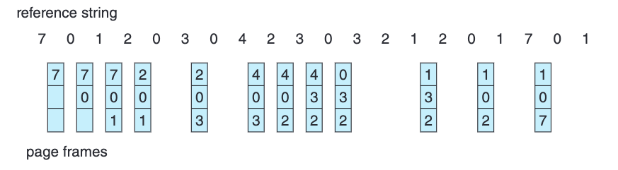
Optimal AlgorithmLook into the Future / Far into the Reference string given that we have the complete reference string, and determine page will be least frequently used in the future and discard that pageOptimal page-replacement algorithm 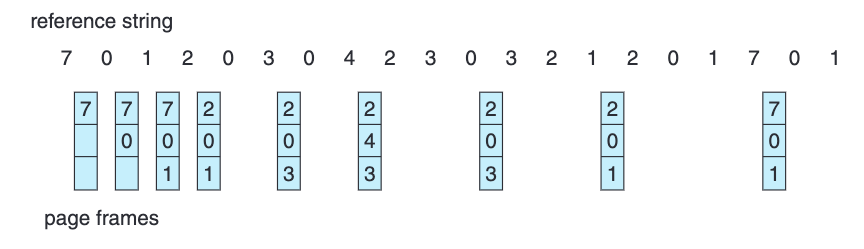